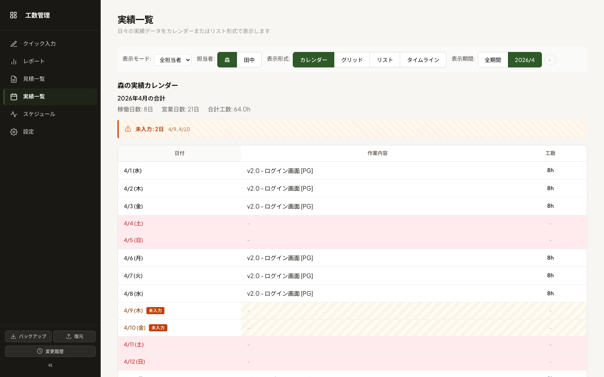
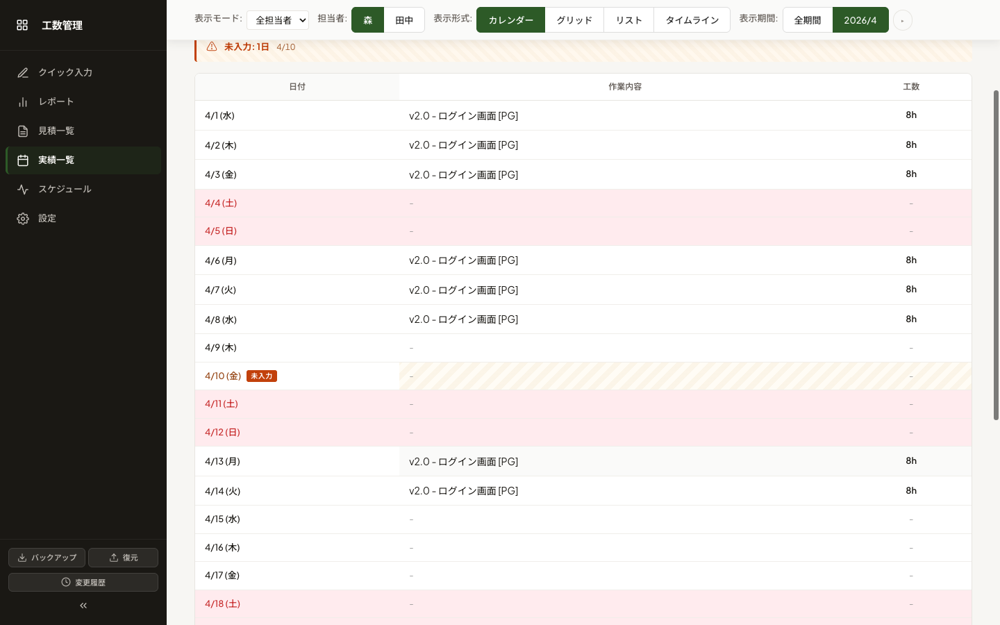
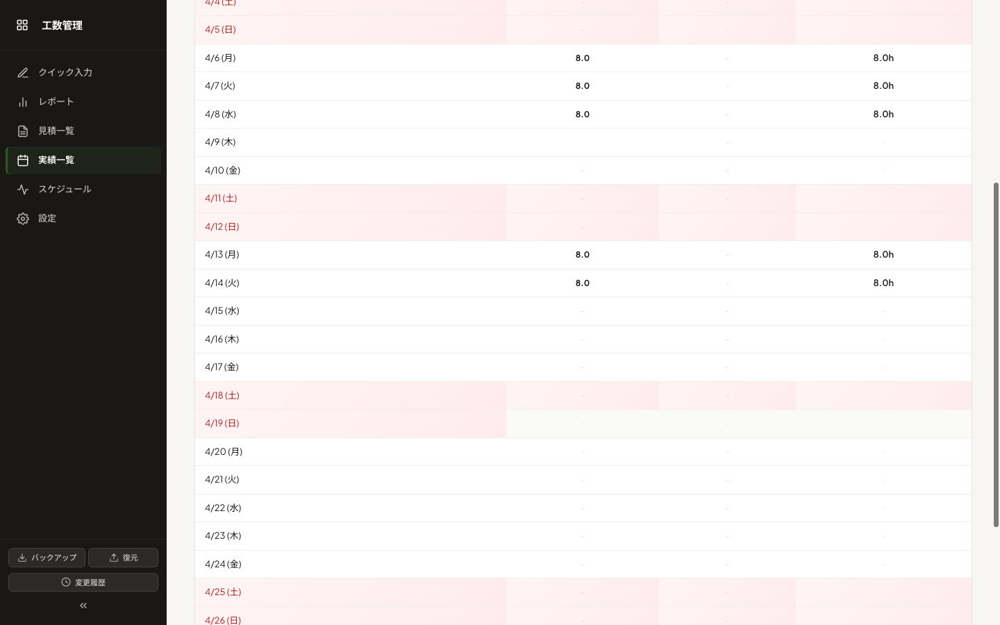
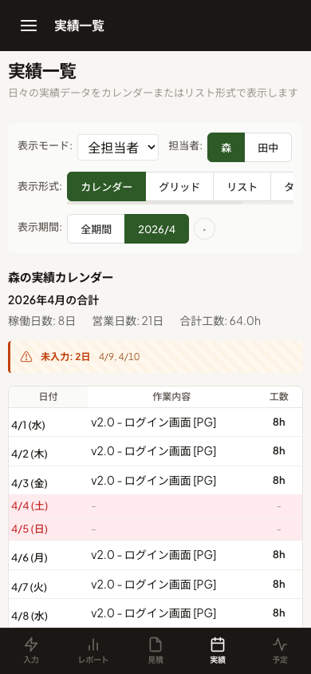

実績入力を忘れている営業日を、カレンダー上で視覚的に明示する機能。 月末になって気づく事態を防ぎ、データの抜けに早期に対処できるようになります。
実装した「未入力日ハイライト」機能が意図通りに動くかを、操作手順に沿って確認するためのガイドです。 各ステップは独立しているので、気になる動作だけを確認することもできます。
確認の前に、テストデータを用意します
ブラウザのコンソールで実行（DevTools → Console）
以下のコードをコンソールに貼り付けて実行すると、当月のテストデータが投入されます。 月の途中に意図的に「未入力日」を作るデータです。
未入力営業日が強調表示されることを確認します
このシナリオで一番見たい画面に到達します
このスクリーンショットで強調表示されている要素を実画面と見比べる

個人休暇を登録した日が「未入力扱いされない」ことを確認
4/9 を森の休暇日として登録
通常はクイック入力 → 休暇登録から行いますが、確認用に簡易コマンドも提供:
休暇登録された4/9が未入力扱いから外れる

「誰の未入力か」が曖昧になる全体表示では機能をオフにする仕様
切替後、ハイライトが消えることを確認

スマートフォン（iPhone 12 Pro / 390px）での表示確認
狭い画面でも崩れず、視認性が保たれる

余裕があれば確認してほしいケース
気になった点があればお知らせください
特に確認してほしいポイント:
docs/improvements/decisions-pending.md
に記録するか、直接フィードバックいただければ次のコミットで反映します。